This package contains basic components 1D mechanical translational drive trains.
| Name | Description |
|---|---|
| 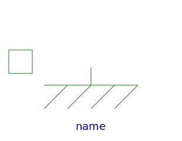 Fixed | Fixed flange |
| Sliding mass with inertia | |
| 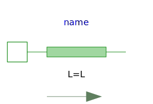 Rod | Rod without inertia |
| 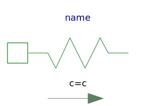 Spring | Linear 1D translational spring |
| 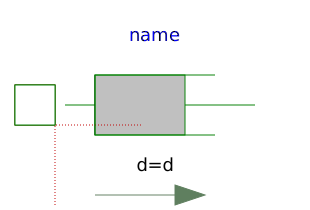 Damper | Linear 1D translational damper |
| Linear 1D translational spring and damper in parallel | |
| 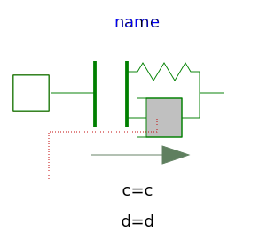 ElastoGap | 1D translational spring damper combination with gap |
| 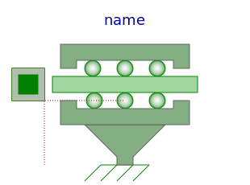 SupportFriction | Coulomb friction in support |
| Brake based on Coulomb friction | |
| Gearbox transforming rotational into translational motion | |
| 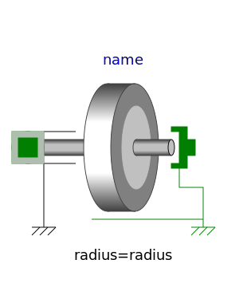 IdealRollingWheel | Simple 1-dim. model of an ideal rolling wheel without inertia |
| 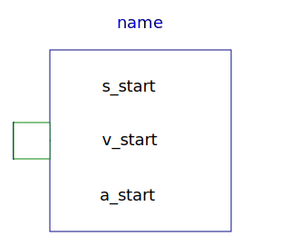 InitializeFlange | Initializes a flange with pre-defined position, speed and acceleration (usually, this is reference data from a control bus) |
| 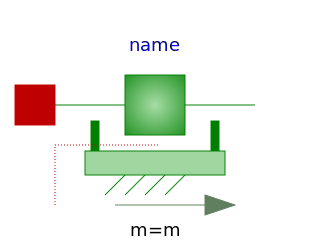 MassWithStopAndFriction | Sliding mass with hard stop and Stribeck friction |
| 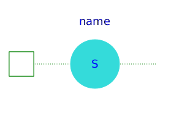 RelativeStates | Definition of relative state variables |
| 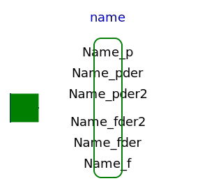 GeneralForceToPositionAdaptor | Signal adaptor for a Translational flange with position, speed, and acceleration as outputs and force as input (especially useful for FMUs) |
| 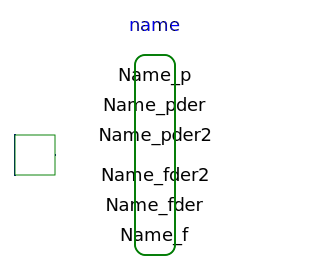 GeneralPositionToForceAdaptor | Signal adaptor for a Translational flange with force as output and position, speed and acceleration as input (especially useful for FMUs) |